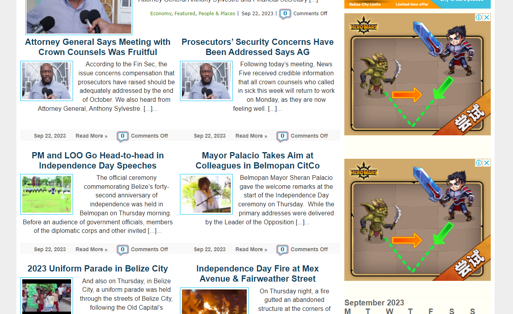
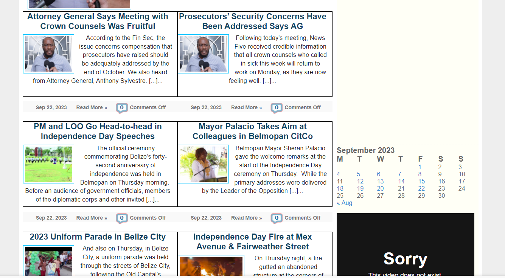

The first css focus on efficiency. in this case, as we can se in the first image.. all the information has no visual separation wich may affect many people trying to separate different infomration from the other. this border would be of great help until the indivisual familiarize itself with how this page work
|
Before |
After |
|---|---|
|  |  |
This second part focuses on both efficiency and seafty. this is because in this home page, the links in the navagation panel are very small to see. therefore, font size is increased as well as adding a hover functionality to highlight when a mouse is over the element increasing safety by aoiding the clicking of the wrong link and Efficiency bu fastening what one desire to do.
|
Before |
After |
|---|---|